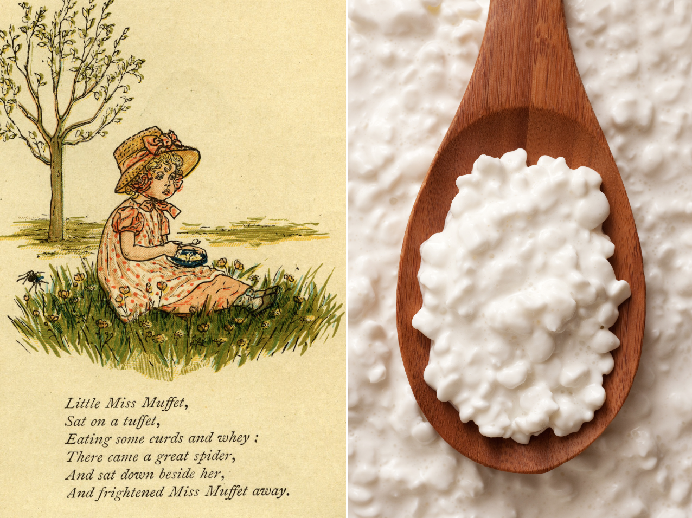

Curds and Whey

A classic take on a classic recipe. Lil Miss Moffet would
be proud!
Ingredients
- 2 cups of milk
- 4 teaspoons vinegar
- You can also use 4 teaspoons of lemon juice, or as a
nice alternative, orange juice, which will make a
slightly sweeter curd for use in home made cheesecakes.
If the curds don't seem to be forming, add an extra
teaspoon or two of your chosen citrus juice.
Instructions
- Place two cups of milk in the saucepan. Slowly bring the
milk to the boil, while stirring constantly. It is very
important to constantly stir the milk or it will burn.
- Turn off the heat once the milk is boiling. Leave the
saucepan on the heat source to cool slowly.
- Add 4 teaspoons of vinegar or citrus fruit juice to the
boiling milk. At this point, the milk should curdle and
turn into curds and whey. Scoop out the curds and store
separately. Use as required.
Back to Main